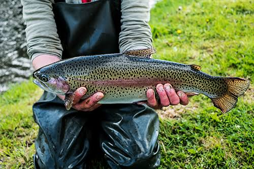

Peces del Lago Titicaca

Imagen: PlusVet
El lago Titicaca alberga diversas especies de peces. Entre las más conocidas se encuentran el carachi, el ispi, el suche y el mauri, que son especies nativas de la región y han vivido en sus aguas durante miles de años.
También hay especies introducidas, como la trucha arcoíris (Oncorhynchus mykiss) y el pejerrey (Odontesthes), que tienen importancia para la pesca y la alimentación de las comunidades cercanas al lago.
El carachi es un pez pequeño y muy común, que los Uros capturan desde hace mucho tiempo. El ispi es aún más pequeño y se pesca en grandes cantidades. El suche y el mauri son peces más grandes y apreciados, aunque hoy son menos abundantes.
La trucha se ha vuelto muy popular porque su carne es sabrosa y se vende bien en los mercados de la zona. Sin embargo, su presencia ha afectado a algunas especies nativas, que tienen que competir con ella por el alimento.
Para los Uros, la pesca es una de las actividades más importantes. En cada isla viven entre cinco y siete familias que se mantienen de lo que pescan y cazan.
Fuente: Felices Vacaciones